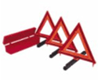

Pedestran
Pretend you are Invisible: Don’t assume a driver sees you and behave accordingly
Face Traffic: It’s easier to see, and react to oncoming cars. And cars will see you more clearly
Make Room: If traffic gets heavy, or the road is narrow, be prepared to move onto the sidewalk
Be Seen: Wear highly visible, bright coloured clothing when its after sunset, use hand held light so you can see wherever you’re going, and drivers can see you.
Unplug Your Ears: Avoid using ipods or wearing head phones – you need to be able to hear approaching vehicles. If you do use it, run with very low volume.
Beware of High Risk Drivers: Stay clear of potential problem areas like entrance to parking lots, bars & restaurants where there may be heavy traffic
Mind Your Manners: At a stop sign or light, wait for the driver to wave you through- then acknowledge with your own polite wave. That acknowledgement will make the driver feel more inclined to do it again.
Motorists
Speed should be adjusted according to the road condition
Drive at a safe speed and always observe the speed limit
Always wear your seat belt and ensure that your passengers do the same
Do not drink and drive
Follow other vehicle at a safe distance
Do not use a mobile phone while driving
Overtake with care
Things Needed in the Vehicle
Depending on the manufacturer and model of a car, a spare tire is typically located in the trunk, tail-mounted, or attached to the undercarriage. Ensure that you have a viable spare tire and that it is fully inflated based on the recommended PSI. The PSI information can usually be found on the sticker inside the driver’s side door or in the owner’s manual. Also make sure that the clamp screw, spare tire housing (or lock) is secure but easily accessible. Sometimes rust or corrosion may build-up making it difficult to access your spare tire. WD-40
Tip: Check your spare tire pressure as frequently as you would check your regular tires. This is especially important before a long trip.Review your vehicle owner's manual to ensure your car jack and all accessories are accounted for and in working order. Similar to the spare tire housing, clamp screw, or lock, this item may develop rust or corrosion over time. Perform maintenance according to the vehicle owner's manual recommendations.
Keep a strong, high-capacity tow strap in your car in case you get stuck in mud or snow. A typical rope will not suffice in most situations. Tow straps are also known as recovery straps, and come at various ratings based on vehicle weight. You should find one that is sturdy, preferably with double-stitched webbing, and that meets or exceeds your vehicle's weight (be sure to include passenger weight and luggage when you assess capacity rating). Most come in 20' and 30' lengths. A quality tow strap should come with forged steel safety hooks that have retaining clips.
A flashlight with new batteries is essential especially when you need to replace a tire or look under the engine hood at night.
The tire tool (lug wrench) is typically located with your vehicle's tire jack.
.jpg) Auto Fire Extinguisher
Auto Fire Extinguisher
There are fire extinguishers that are specifically made for car fires. You will need a fire extinguisher that handles oil, gasoline and electrical fires. One that is getting great reviews right now is the First Alert Auto Fire Extinguisheron Amazon and can be purchased for under $20. There are also a variety of products that handle both marine and car fires if you are seeking a multi-purpose extinguisher you can transfer from one vehicle to another. If budget is not an issue and you own a high-end car, classic car, or just want a cleaner discharge that won't ruin your vehicle, then I would recommend looking into products such as a HalGuard Clean Agent Fire Extinguisher. These products are effective at putting out fires and leave less mess and prevent damage. As an added bonus, they come in chrome if you want to dress-up your car.
You want to be seen at night by other motorists if your car breaks down to avoid a potentially fatal situation. As previously mentioned on the common items list, a flashlight is essential. However, a flashlight will not provide enough of a light signature at night to warn other motorists to pay attention or slow-down. You need markers that are highly reflective like reflective emergency triangles and/or flares well behind your vehicle at appropriate distance to give an early warning. Most important for your safety, you need a reflective vest so that you can be easily seen. All first responders such as police officers and paramedics utilize reflective clothing or vests on the road for a good reason -- because reflective clothing save lives. I would recommend a yellow reflective safety vest that meets ANSI/ISEA standards such as the Neiko High Visibility Neon Yellow Vest.
Other considerations: Emergency reflective triangles are recommended for placement behind your vehicle. Just make sure they have a substantially weighted base. Too often light weight triangles get blown off the road by high winds or from large trucks passing by.